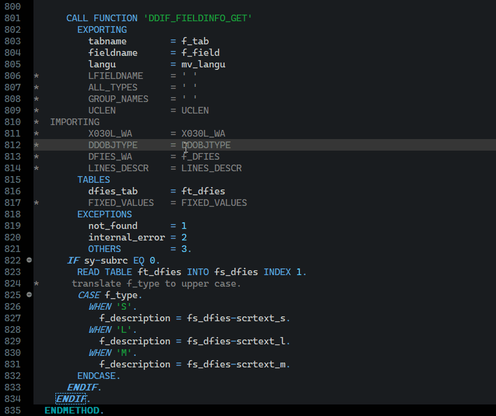

ABAP Quick Fixes - Remove Full Line Comments from Statement
In case you have full line comments in statement and you want to remove them, this is the quick fix for you.
It can be used especially if you have full signature of FM inserted with commented part of the paramters.
It helps to keep code clean of unnecessary, commented code.
